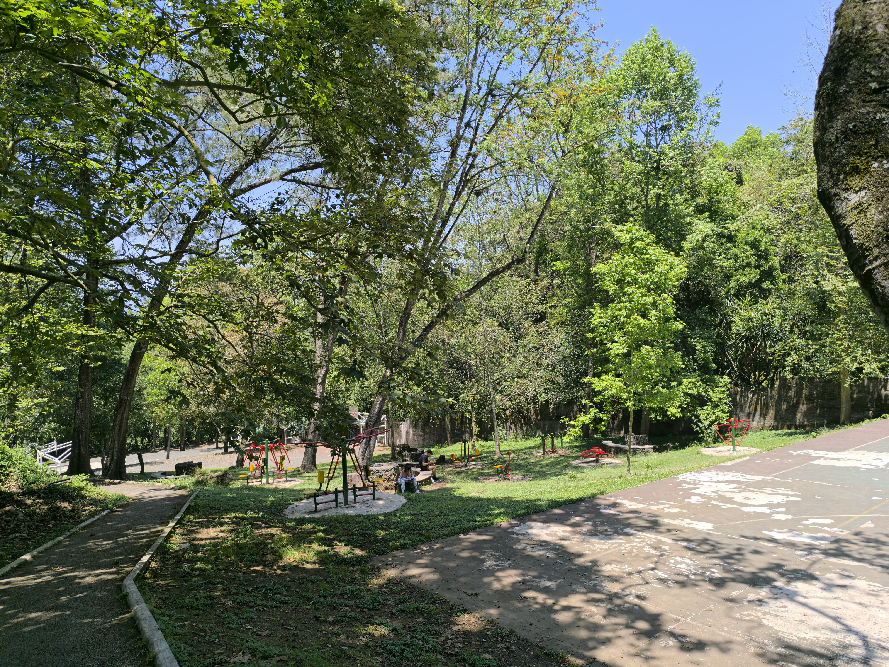
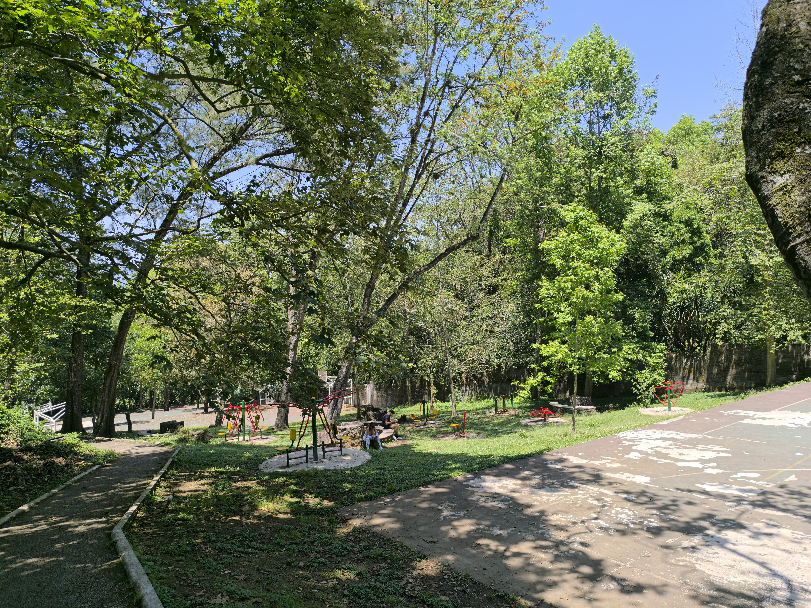

Parque Berros


Visita el parque "Los Berros" en Xalapa
Los Berros
Los berros es un lugar que se encuentra......
Parque Haya

 


Ven a visitar el parque haya!
El Haya
El parque haya es un lugar donde....
Parque Tecajetes


Ven a visitar el parque los berros!
Los tecajetes es un lugar....